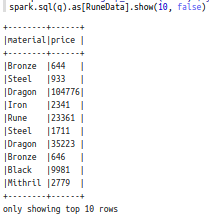

Joris Reichert
Final Project
Blog #6 for the Big Data course.
Introduction
Welcome to my sixth and final blogpost in the Big Data series. This blog is not like any of the others: for this final assignment I am to do a project to get hands-on experience in running and debugging jobs and working on large amounts of unstructured data. Now that may not sound very different from my previous blogposts, but the nuance lies in the word large. Large no longer means the entire works of Shakespeare, but now it refers to the entire Commoncrawl webcrawl! The project also differs from the way of work so far, as I am to
- Run Spark code standalone, outside the notebook interface;
- Scale up our workload in multiple steps, to tackle the issues that I encounter one by one.
Instructions part 1: WARC files in Spark
Preliminaries
Sadly, it is time to retire our old and trusty docker image that we have been using in blogs 3 through 5. We're provided with something new, obtained and started by running:
sudo docker pull rubigdata/course:project
sudo docker create --name cc -it -p 8080:8080 -p 9001:9001 -p 4040:4040 rubigdata/course:project
sudo docker start cchttp://localhost:9001/.
Managing WARC files
To analyse how we can obtain data from WARC files we will look at the following piece of example code:
// What are the text content-type records that were recorded in the crawl?
val wh = warcs.
map{ wr => wr._2.getRecord() }.
filter{ _.isHttp() }.
map{ wr => (wr.getHeader().getUrl(),wr.getHttpHeaders().get("Content-Type")) }.
filter{
case(k,v) => v match {
case null => false
case _ => v.startsWith("text") }
}
wh.take(20).foreach{ println }The first mapper is required to obtain the records of all warcs. Those records can still include records that contain images. We don't like images as they are harder to analyse, so we can use the filter function to check if the record is a HTTP (text) record.
The second mapper creates a tuple. The left half of the tuple opens the WARC header and obtains the URL from it. The right half of the header opens the HTTP header to obtain the content type from it.
The second filter filters out any tuples we created of which the content type (right side) does not start with the text "text". This filters out the HTTP requests as their content type is null and leaves us with only the HTTP responses.
I'm very excited to share this blogpost with you, as the streaming data we will be looking at is (simulated) RuneScape data! As I was AFKing oldschool runescape (gotta craft those blood runes whenever you can) while I found out we will be using this data, I suddenly got more motivated for this assignment than for all previous assignments together. This blogpost is written to report my experiences on working with Spark's Structured Streaming API. Just like the previous two blogposts, I worked using Zeppelin Notebooks in the Zeppelin UI.I followed this assignment that I was given for the Big Data course at the Radboud University. This blogpost however should be readable for anyone who wants to learn something about Spark's Structured Streaming API or enjoy me fangirling about oldschool runescape (osrs). The notebooks I started with and the ones I ended up with are available on my github.
Getting started
In this assignment I continued working in Zeppelin Notebooks. This was easy as I could simply follow the second and third step I did in assignment three. We start the container using:
sudo docker start hey-sparkNow, the Zeppelin UI is accessible from port 9001. That's it!
A5
This week only has one Zeppelin notebook, A5.
Starting out & Preliminaries
The introduction mentions it is very easy to get stuck, but I'm relieved there is a step-by-step plan that should solve 99% of the problems. Let's hope I'm not in the 1%. I'm on a drystreak for plenty of items & pets on osrs, so let's not waste my rng on this assignment.
We can take a look at the stream using some console commands given in the notebook. This prints a stream of data in our console, a printscreen of which is given here.

In order to work with this stream we have to create a spark dataframe that is tied to the TCP/IP stream on localhost port 9999. We'll call this dataframe socketDF and we can create this using the readStream operation.
val socketDF = spark.readStream
.format("socket")
.option("host", "0.0.0.0")
.option("port", 9999)
.load()socketDF when we want to obtain data.
In-memory stream processing
When gathering some data in a StreamingQuery called memoryQuery, I didnt't seem to get any data with
// Setup streamreader
val streamWriterMem = socketDF
.writeStream
.outputMode("append")
.format("memory")
// Start streaming!
val memoryQuery = streamWriterMem
.queryName("memoryDF")
.start()
// Run for 1 second...
memoryQuery
.awaitTermination(1000)
// ... and stop the query, to avoid filling up memory:
memoryQuery
.stop()
Luckily, changing the 1 to a 3 (letting the query run for three seconds) gave me something to work with: spark.sql("select count(*) from memoryDF").show() gave me 183 rows to work with:
Now we have a dataframe called memoryDF that contains a three-second fragment of the stream as obtained from the dataframe socketDF.
Parsing the input stream (or rather the stream fragment)
There was some code given that allowed us to parse the stream in a way we separate the material of the item and the price. This resulted in having our data in the format:
However, as any 'scaper knows, the material is mostly relevant for the alchemy values, not for the market value which is the kind of data we have here. A dragon mace can just be bought at a shop (therefore the market price will always be around the shop value), whereas a dragon chainbody or even dragon warhammer are rare monster drops. So, we also want to process the type of product that is made of the material. As it turns out, we can't use the word 'type' as the name of a type, so we shall name it 'product'.
-
- changed the type definition
case class RuneData(material: String, price: Integer)- into
case class RuneData(material: String, product: String, price: Integer)
-
- changed the regular expression to parse the strings from
val myregex = "\"^([A-Z].+) [A-Z].+ was sold for (\\\\d+)\"" val q = f"select regexp_extract(value, $myregex%s, 1) as material, cast(regexp_extract(value, $myregex%s, 2) as Integer) as price from memoryDF" spark.sql(q).as[RuneData].show(10, false)- into
val myregex = "\"^([A-Z].+) ([A-Z].+) was sold for (\\\\d+)\"" val q = f"select regexp_extract(value, $myregex%s, 1) as material, regexp_extract(value, $myregex%s, 2) as product, cast(regexp_extract(value, $myregex%s, 3) as Integer) as price from memoryDF" spark.sql(q).as[RuneData].show(10, false)
[A-Z.+]part in the regex definition, enabling theregexp_extract()function to also obtain this part. In the original code,myregexallowed for the retrieval of two things (the material and the price), however as we now also want to store the product (type) we also had to trivially change our SQL query.
I think it's awesome that the two dragon items that had such a price discrepancy turned out to be the dragon warhammer (dwh) and dragon mace :D. To be fair, 100k for a dwh is a joke, that thing is more like 25m iirc.
What the Regex?
So, I mentioned how we had to change the regex for our use, but hardly explained what happened. Let's concisely do so here.
A regex (or regular expression) can be used to identify certain parts of a string.
As we could see in the first printscreen of this blog, all streamed data is in the same format: (Material) (Product) was sold for (number)gp.
All materials and products start with a capital letter, which we can identify using the regex [A-Z]. Because all materials and products can contain more than one letter, we write [A-Z].+ to identify a capital letter followed by one or multiple other characters.
myregex: String = "^([A-Z].+) ([A-Z].+) was sold for (\\d+)"
This is the regex we used. Note that in the code above it looks slightly different, because in the definition we use backslash a lot to escape special characters.
It can be read somewhat similar to a string. It uses " to signal the start and beginning. The text " was sold for " and the spaces between the ')' and '(' characters represent substrings that are expected to look exactly like that. The regex parts (those between parentheses) identify a substring that has certain characteristics, like the one discussed above and the last one that expects a number. Perhaps most importantly for our little change: The parentheses allow for the value to be extracted using the SQL query.
To my fellow 'scapers out there, I just got 85 runecrafting while writing this part. 1/4 of the way to 99! :D
Stream processing
Here comes the real work. Processing a stream sample was a good way to get started, but now we switch to continuous stream processing.
Streaming data
We can create and start a streaming query on the same TCP/IP stream that we previously took a sample of.
val consoleQuery = socketDF
.writeStream
.outputMode("append")
.format("console")
.start()spark.streams.active to see the top 20 results of our query and the size of the batch. When we run consoleQuery.stop() we end the query. This is similar to what we did when we parsed the input fragment, but there ran it for a predetermined amount of time and we also created a dataframe that stored the results of the query.
In the declaration of consoleQuery we specified the query should be formatted for outputting to the console by using .format("console") whereas with memoryQuery we specified .format("memory"). When storing the results of the query in memory it was also necessary to name this, which we did using the .queryName("memoryDF") function in the code fragment:
val memoryQuery = streamWriterMem
.queryName("memoryDF")
.start()spark.streams.active keeps on increasing over time. At some point, my results looked like this:
As you can see, this output is clearly not structured. With some alterations we can parse this live stream data similar to how we parsed the memoryDF dataframe.
Structuring the stream data
First, we need to register the streaming dataframe socketDF as a temporary view so we can apply SQL commands on it. In the code example below, df would be the name of our streaming dataframe and updates the name of the temporary view.
df.createOrReplaceTempView("updates")
spark.sql("select count(*) from updates") // returns another streaming DFRuneData previously, we can now use that in combination with the regex and query we wrote previously. Do note, my beautifully fitting columnname 'product' has been replaced by 'tpe' from here on out. This resulted in us executing the following code fragments:
socketDF.createOrReplaceTempView("runeUpdatesDF")case class RuneData(material: String, tpe: String, price: Integer)val myregex = "\"^([A-Z].+) ([A-Z].+) was sold for (\\\\d+)\""
val q = f"select regexp_extract(value, $myregex%s, 1) as material, regexp_extract(value, $myregex%s, 2) as tpe, cast(regexp_extract(value, $myregex%s, 3) as Integer) as price from runeUpdatesDF"
val runes = spark.sql(q).as[RuneData]val rConsoleQuery = runes
.writeStream
.outputMode("append")
.format("console")
.start()rConsoleQuery. We let this stream run for a small while (hence batch size of 651) and took a look at it using spark.streams.active.

Now that's more like it!
Writing output to disk
Now we've been writing the stream output to memory and to console, but often it makes most sense to write it to a disk. All the work we've done so far was not in vain, as now we can write the stream data in a structured manner as it comes in. Writing to console and memory were good ways to check our regex and parsing.
To write to disk we need to:
- Create a directory to write the data in
%sh mkdir -p /opt/hadoop/share/runedata - Setup a writer to copy the query output to disk (this writer writes to disk every two seconds)
val streamWriterDisk = runes .writeStream .outputMode("append") .option("checkpointLocation", "file:///tmp/checkpoint") .trigger(Trigger.ProcessingTime("2 seconds")) - Start the query
val stream2disk = streamWriterDisk .start("file:///opt/hadoop/share/runedata") - Check if it's running
- Regularly check the amount of data written to disk
- Stop the stream after a while using
stream2disk.stop(). I did so after collecting 3mb of data.
Checkpointing
According to the assignment "Checkpointing is what is needed for fault-tolerance in an operational streaming setting. I’d be happy if you’d dive into it, but it’s ok for now to just take that for granted. Roughly, because we defined a trigger on this query, every other second a checkpoint should have been created, and a microbatch written to disk."
I've ran the given code and saw that there were 274 checkpoints in my data. Because we wrote every two seconds, this implies I ran the stream for over 9 minutes, which I definitely didn't. Looking at the execution times of the start and stop codeblocks, I ran it for 2 minutes and 19 seconds (or 139 seconds). It seems like a checkpoint has been made far more often than the 'every other second' we wrote to disk. It'd be interesting to find out why this is the case or what happened exactly, but I found that to be more extensive than what this blog should cover. If any reader (looking at you, peer reviewers) knows more about this, please let me know! :D
Working with the collected data
So, now that we have 3mb of generated runescape market data, let's do something with it. Similar to assignment 3B we can analyse the data on disk using the Dataframe API.
val runes = spark
.read
.parquet("file:///opt/hadoop/share/runedata/part-*")
.createOrReplaceTempView("runes")FROM runes. Time to dust off that SQL knowledge of >5 years ago.
An OSRS market insight
Even though I play OSRS as an Ironman (meaning you can't trade and have to unlock and acquire everything yourself), I'm sure I can say some relevant things about the market and purchasing items from the Grand Exchange.
Combat is a large aspect of Runescape, and for simplicity sake (I assume) our datastream only contained (metal) melee weaponry. Until recently there were only a few useful weapons (of those that were made of the standard metals). Those were the Scimitar (of every material) and some other weapons of Dragon metal. This was largely due to the the scimitar being the only melee 4-tick weapon, meaning it was at least 25% faster than any other weapon. Recently this was changed and now the Mace is also a 4-tick weapon. Although the accuracy stats and strength stats still slightly differ, the mace has become way more viable. If the mace would be cheaper than the scimitar, it could provide us with a good alternative to it. Let's see how the Mace and Scimitar average prices differ accross materials.
SELECT material, tpe, avg(price)
FROM runes
WHERE tpe="Scimitar" OR tpe="Mace"
GROUP BY material, tpe
ORDER BY material
Looking at this data we see that on average a mace is always cheaper than a scimitar of the same material, making it a decent cheaper alternative.
Did you know that you can actually use an API to acquire data from the Grand Exchange? More about this "Grand Exchange Database API" is written here. Do note that if you want to work with oldschool data you have to replace every occurrence of itemdb_rs with itemdb_oldschool
The required SQL queries
In the assignment we were asked to at the very least provide queries that answer three questions, which I've done here. Compared to the query above, these are all fairly trivial. I've also added printscreens of the output.
-
How many rune items were sold?
%sql -- Number of Rune items sold SELECT COUNT(*) FROM runes WHERE material="Rune" -
How many of each item type was sold? (the ordering was not required but added for readability)
%sql -- Amount of sold items per item type SELECT tpe, count(*) FROM runes GROUP BY tpe ORDER BY count(*) DESC -
How much gold was spent buying swords?
%sql --total gold spend buying swords --Not sure what is meant with 'swords', so I'll cover these four: --'Sword', 'Longsword', 'Two-handed sword', 'Scimitar' SELECT tpe, SUM(price) FROM runes WHERE tpe='Sword' OR tpe='Longsword' OR tpe='Two-handed sword' OR tpe='Scimitar' GROUP BY tpe ORDER BY SUM(price) DESC